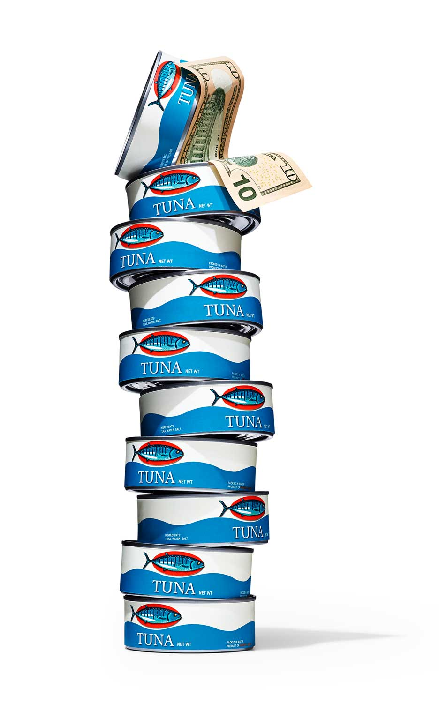
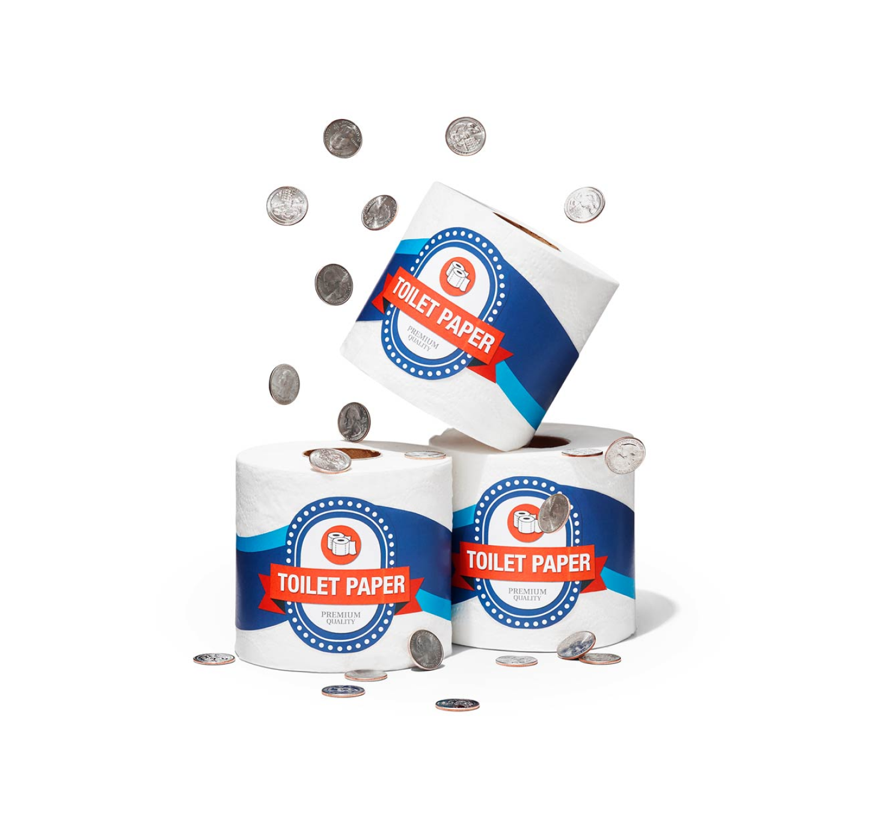

reader's digest
Enhanced the content of their website refreshing the overall look of the current visual materials they had under their guidelines. Designing graphic material which increased potentially the traffic in the site and attracted younger audiences. Worked on the print side on some of the issues like "40 Supermarket Secrets" issue of the cover story and inner pages of the Reader's Digest March issue 2018. Collaborated with the art director, photographer and in house team to produce something that was faithful to RD guidelines.
Role: Senior Visual Designer
Deliverables: Design, Illustration


